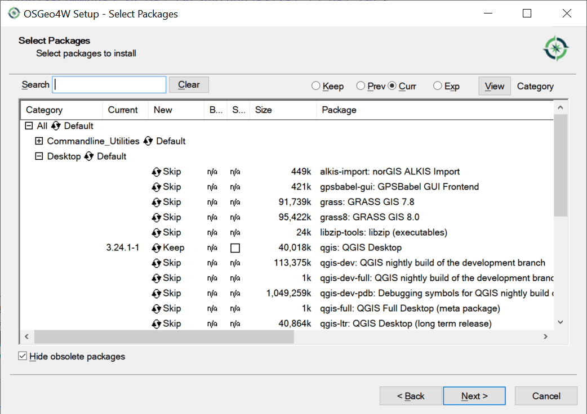

layout: true .toc.banner[ .shorttitle[ [ГИС аспирантура](break.html#home) ] ] --- name: home class: metadata customtitle middle left giphy .toc.sidebar.left-column[ .outline[ ## [Установка](#Ha21dc) ## [Интерфейс пользователя](#He6e86) ## [Ведение проекта](#H6a886) ## [Анализ](#Hcc33d) ] ] .toc.mainbar.right-column.scrollable[ .author[Никита Платонов] .institute[с.н.с. ИПЭЭ РАН] .title[ Начало работы с QGIS ] .subtitle[ ГИС технологии в биологических исследованиях ] .what[ Занятие 02 ] .where[ ] .when[ .updated[Обновлено: 2025-02-05 22:25] ] ] --- name: Ha21dc .toc.sidebar.left-column[ .outline[ ## [Установка](#Ha21dc).fg[] ### [Standalone](#Ha21dc) <span class="bullet bullet-active">[•](#Ha21dc)</span><span class="bullet mslide6m">[•](#H357b5)</span>.fg[].bg[] ### [OSGeo4W](#H1faaf) ### [NextGIS QGIS](#Hcacc9) ### [Good practice](#Hbc338) ## [Интерфейс пользователя](#He6e86) ## [Ведение проекта](#H6a886) ## [Анализ](#Hcc33d) ] ] .toc.mainbar.right-column.scrollable[ .header.broad[ Standalone ] .fixprecode[ <!-- [QGIS Web](https://qgis.org/en/site/) --> https://qgis.org/en/site/ <iframe src="https://qgis.org/en/site/" width=100% height=550> </iframe> Находим "Download Now" ] ] --- https://qgis.org/en/site/forusers/download.html name: H357b5 .toc.sidebar.left-column[ .outline[ ## [Установка](#Ha21dc).fg[] ### [Standalone](#Ha21dc) <span class="bullet bullet">[•](#Ha21dc)</span><span class="bullet bullet-active">[•](#H357b5)</span>.fg[].bg[] ### [OSGeo4W](#H1faaf) ### [NextGIS QGIS](#Hcacc9) ### [Good practice](#Hbc338) ## [Интерфейс пользователя](#He6e86) ## [Ведение проекта](#H6a886) ## [Анализ](#Hcc33d) ] ] .toc.mainbar.right-column.scrollable[ .header.broad[ Standalone ] .fixprecode[ <iframe src="https://qgis.org/en/site/forusers/download.html" width=100% height=550> </iframe> ] ] --- name: H1faaf .toc.sidebar.left-column[ .outline[ ## [Установка](#Ha21dc).fg[] ### [Standalone](#Ha21dc) ### [OSGeo4W](#H1faaf) <span class="bullet bullet-active">[•](#H1faaf)</span><span class="bullet mslide8m">[•](#Hd2c37)</span>.fg[].bg[] ### [NextGIS QGIS](#Hcacc9) ### [Good practice](#Hbc338) ## [Интерфейс пользователя](#He6e86) ## [Ведение проекта](#H6a886) ## [Анализ](#Hcc33d) ] ] .toc.mainbar.right-column.scrollable[ .header.broad[ OSGeo4W ] .fixprecode[ Программное обеспечение с открытым исходным кодом для Windows https://trac.osgeo.org/osgeo4w/ <iframe src="https://trac.osgeo.org/osgeo4w/" width=100% height=530> </iframe> Находим "Download the OSGeo4W network installer" ] ] --- name: Hd2c37 .toc.sidebar.left-column[ .outline[ ## [Установка](#Ha21dc).fg[] ### [Standalone](#Ha21dc) ### [OSGeo4W](#H1faaf) <span class="bullet bullet">[•](#H1faaf)</span><span class="bullet bullet-active">[•](#Hd2c37)</span>.fg[].bg[] ### [NextGIS QGIS](#Hcacc9) ### [Good practice](#Hbc338) ## [Интерфейс пользователя](#He6e86) ## [Ведение проекта](#H6a886) ## [Анализ](#Hcc33d) ] ] .toc.mainbar.right-column.scrollable[ .header.broad[ OSGeo4W ] .fixprecode[  ] ] --- name: Hcacc9 .toc.sidebar.left-column[ .outline[ ## [Установка](#Ha21dc).fg[] ### [Standalone](#Ha21dc) ### [OSGeo4W](#H1faaf) ### [NextGIS QGIS](#Hcacc9).fg[].bg[] ### [Good practice](#Hbc338) ## [Интерфейс пользователя](#He6e86) ## [Ведение проекта](#H6a886) ## [Анализ](#Hcc33d) ] ] .toc.mainbar.right-column.scrollable[ .header.broad[ NextGIS QGIS ] .fixprecode[ https://nextgis.com/nextgis-qgis/ (Windows) <iframe src="https://nextgis.com/nextgis-qgis/" width=100% height=530> </iframe> Находим "Download NextGIS QGIS installer" ] ] --- class: middle name: Hbc338 .toc.sidebar.left-column[ .outline[ ## [Установка](#Ha21dc).fg[] ### [Standalone](#Ha21dc) ### [OSGeo4W](#H1faaf) ### [NextGIS QGIS](#Hcacc9) ### [Good practice](#Hbc338).fg[].bg[] ## [Интерфейс пользователя](#He6e86) ## [Ведение проекта](#H6a886) ## [Анализ](#Hcc33d) ] ] .toc.mainbar.right-column.scrollable[ .header.broad[ Good practice ] .fixprecode[ Используем поисковые системы, ссылки могут устареть. ] ] --- name: He6e86 .toc.sidebar.left-column[ .outline[ ## [Установка](#Ha21dc) ## [Интерфейс пользователя](#He6e86).fg[] ### [Menu](#He6e86).fg[] #### [Project](#He6e86).fg[].bg[] #### [Edit](#H59540) #### [View](#H38554) #### [Layer](#Hf78fb) #### [Settings](#Hd6f27) #### [Plugins](#H41576) #### [Vector](#H3e27e) #### [Raster](#H13f16) #### [Web](#Hcf5e4) #### [Processing](#H1c406) ### [Options](#H615c6) ### [Specific](#Hfcdcd) ## [Ведение проекта](#H6a886) ## [Анализ](#Hcc33d) ] ] .toc.mainbar.right-column.scrollable[ .header.broad[ Project ] .fixprecode[ <img src="assets/QGIS/01%20%D0%98%D0%BD%D1%82%D0%B5%D1%80%D1%84%D0%B5%D0%B9%D1%81%20%D0%BF%D0%BE%D0%BB%D1%8C%D0%B7%D0%BE%D0%B2%D0%B0%D1%82%D0%B5%D0%BB%D1%8F/01%20Menu/QGIS-Menu-01-Project.png" width="1330" height="700" style="display: block; margin: auto auto auto 0;" /> ] ] --- name: H59540 .toc.sidebar.left-column[ .outline[ ## [Установка](#Ha21dc) ## [Интерфейс пользователя](#He6e86).fg[] ### [Menu](#He6e86).fg[] #### [Project](#He6e86) #### [Edit](#H59540).fg[].bg[] #### [View](#H38554) #### [Layer](#Hf78fb) #### [Settings](#Hd6f27) #### [Plugins](#H41576) #### [Vector](#H3e27e) #### [Raster](#H13f16) #### [Web](#Hcf5e4) #### [Processing](#H1c406) ### [Options](#H615c6) ### [Specific](#Hfcdcd) ## [Ведение проекта](#H6a886) ## [Анализ](#Hcc33d) ] ] .toc.mainbar.right-column.scrollable[ .header.broad[ Edit ] .fixprecode[ <img src="assets/QGIS/01%20%D0%98%D0%BD%D1%82%D0%B5%D1%80%D1%84%D0%B5%D0%B9%D1%81%20%D0%BF%D0%BE%D0%BB%D1%8C%D0%B7%D0%BE%D0%B2%D0%B0%D1%82%D0%B5%D0%BB%D1%8F/01%20Menu/QGIS-Menu-02-Edit.png" width="1330" height="700" style="display: block; margin: auto auto auto 0;" /> ] ] --- name: H38554 .toc.sidebar.left-column[ .outline[ ## [Установка](#Ha21dc) ## [Интерфейс пользователя](#He6e86).fg[] ### [Menu](#He6e86).fg[] #### [Project](#He6e86) #### [Edit](#H59540) #### [View](#H38554).fg[].bg[] #### [Layer](#Hf78fb) #### [Settings](#Hd6f27) #### [Plugins](#H41576) #### [Vector](#H3e27e) #### [Raster](#H13f16) #### [Web](#Hcf5e4) #### [Processing](#H1c406) ### [Options](#H615c6) ### [Specific](#Hfcdcd) ## [Ведение проекта](#H6a886) ## [Анализ](#Hcc33d) ] ] .toc.mainbar.right-column.scrollable[ .header.broad[ View ] .fixprecode[ <img src="assets/QGIS/01%20%D0%98%D0%BD%D1%82%D0%B5%D1%80%D1%84%D0%B5%D0%B9%D1%81%20%D0%BF%D0%BE%D0%BB%D1%8C%D0%B7%D0%BE%D0%B2%D0%B0%D1%82%D0%B5%D0%BB%D1%8F/01%20Menu/QGIS-Menu-03-View.png" width="1330" height="700" style="display: block; margin: auto auto auto 0;" /> ] ] --- name: Hf78fb .toc.sidebar.left-column[ .outline[ ## [Установка](#Ha21dc) ## [Интерфейс пользователя](#He6e86).fg[] ### [Menu](#He6e86).fg[] #### [Project](#He6e86) #### [Edit](#H59540) #### [View](#H38554) #### [Layer](#Hf78fb).fg[].bg[] #### [Settings](#Hd6f27) #### [Plugins](#H41576) #### [Vector](#H3e27e) #### [Raster](#H13f16) #### [Web](#Hcf5e4) #### [Processing](#H1c406) ### [Options](#H615c6) ### [Specific](#Hfcdcd) ## [Ведение проекта](#H6a886) ## [Анализ](#Hcc33d) ] ] .toc.mainbar.right-column.scrollable[ .header.broad[ Layer ] .fixprecode[ <img src="assets/QGIS/01%20%D0%98%D0%BD%D1%82%D0%B5%D1%80%D1%84%D0%B5%D0%B9%D1%81%20%D0%BF%D0%BE%D0%BB%D1%8C%D0%B7%D0%BE%D0%B2%D0%B0%D1%82%D0%B5%D0%BB%D1%8F/01%20Menu/QGIS-Menu-04-Layer.png" width="1330" height="700" style="display: block; margin: auto auto auto 0;" /> ] ] --- name: Hd6f27 .toc.sidebar.left-column[ .outline[ ## [Установка](#Ha21dc) ## [Интерфейс пользователя](#He6e86).fg[] ### [Menu](#He6e86).fg[] #### [Project](#He6e86) #### [Edit](#H59540) #### [View](#H38554) #### [Layer](#Hf78fb) #### [Settings](#Hd6f27).fg[].bg[] #### [Plugins](#H41576) #### [Vector](#H3e27e) #### [Raster](#H13f16) #### [Web](#Hcf5e4) #### [Processing](#H1c406) ### [Options](#H615c6) ### [Specific](#Hfcdcd) ## [Ведение проекта](#H6a886) ## [Анализ](#Hcc33d) ] ] .toc.mainbar.right-column.scrollable[ .header.broad[ Settings ] .fixprecode[ <img src="assets/QGIS/01%20%D0%98%D0%BD%D1%82%D0%B5%D1%80%D1%84%D0%B5%D0%B9%D1%81%20%D0%BF%D0%BE%D0%BB%D1%8C%D0%B7%D0%BE%D0%B2%D0%B0%D1%82%D0%B5%D0%BB%D1%8F/01%20Menu/QGIS-Menu-05-Settings.png" width="1330" height="700" style="display: block; margin: auto auto auto 0;" /> ] ] --- name: H41576 .toc.sidebar.left-column[ .outline[ ## [Установка](#Ha21dc) ## [Интерфейс пользователя](#He6e86).fg[] ### [Menu](#He6e86).fg[] #### [Project](#He6e86) #### [Edit](#H59540) #### [View](#H38554) #### [Layer](#Hf78fb) #### [Settings](#Hd6f27) #### [Plugins](#H41576).fg[].bg[] #### [Vector](#H3e27e) #### [Raster](#H13f16) #### [Web](#Hcf5e4) #### [Processing](#H1c406) ### [Options](#H615c6) ### [Specific](#Hfcdcd) ## [Ведение проекта](#H6a886) ## [Анализ](#Hcc33d) ] ] .toc.mainbar.right-column.scrollable[ .header.broad[ Plugins ] .fixprecode[ <img src="assets/QGIS/01%20%D0%98%D0%BD%D1%82%D0%B5%D1%80%D1%84%D0%B5%D0%B9%D1%81%20%D0%BF%D0%BE%D0%BB%D1%8C%D0%B7%D0%BE%D0%B2%D0%B0%D1%82%D0%B5%D0%BB%D1%8F/01%20Menu/QGIS-Menu-06-Plugins.png" width="1330" height="700" style="display: block; margin: auto auto auto 0;" /> ] ] --- name: H3e27e .toc.sidebar.left-column[ .outline[ ## [Установка](#Ha21dc) ## [Интерфейс пользователя](#He6e86).fg[] ### [Menu](#He6e86).fg[] #### [Project](#He6e86) #### [Edit](#H59540) #### [View](#H38554) #### [Layer](#Hf78fb) #### [Settings](#Hd6f27) #### [Plugins](#H41576) #### [Vector](#H3e27e).fg[].bg[] #### [Raster](#H13f16) #### [Web](#Hcf5e4) #### [Processing](#H1c406) ### [Options](#H615c6) ### [Specific](#Hfcdcd) ## [Ведение проекта](#H6a886) ## [Анализ](#Hcc33d) ] ] .toc.mainbar.right-column.scrollable[ .header.broad[ Vector ] .fixprecode[ <img src="assets/QGIS/01%20%D0%98%D0%BD%D1%82%D0%B5%D1%80%D1%84%D0%B5%D0%B9%D1%81%20%D0%BF%D0%BE%D0%BB%D1%8C%D0%B7%D0%BE%D0%B2%D0%B0%D1%82%D0%B5%D0%BB%D1%8F/01%20Menu/QGIS-Menu-07-Vector.png" width="1330" height="700" style="display: block; margin: auto auto auto 0;" /> ] ] --- name: H13f16 .toc.sidebar.left-column[ .outline[ ## [Установка](#Ha21dc) ## [Интерфейс пользователя](#He6e86).fg[] ### [Menu](#He6e86).fg[] #### [Project](#He6e86) #### [Edit](#H59540) #### [View](#H38554) #### [Layer](#Hf78fb) #### [Settings](#Hd6f27) #### [Plugins](#H41576) #### [Vector](#H3e27e) #### [Raster](#H13f16).fg[].bg[] #### [Web](#Hcf5e4) #### [Processing](#H1c406) ### [Options](#H615c6) ### [Specific](#Hfcdcd) ## [Ведение проекта](#H6a886) ## [Анализ](#Hcc33d) ] ] .toc.mainbar.right-column.scrollable[ .header.broad[ Raster ] .fixprecode[ <img src="assets/QGIS/01%20%D0%98%D0%BD%D1%82%D0%B5%D1%80%D1%84%D0%B5%D0%B9%D1%81%20%D0%BF%D0%BE%D0%BB%D1%8C%D0%B7%D0%BE%D0%B2%D0%B0%D1%82%D0%B5%D0%BB%D1%8F/01%20Menu/QGIS-Menu-08-Raster.png" width="1330" height="700" style="display: block; margin: auto auto auto 0;" /> ] ] --- name: Hcf5e4 .toc.sidebar.left-column[ .outline[ ## [Установка](#Ha21dc) ## [Интерфейс пользователя](#He6e86).fg[] ### [Menu](#He6e86).fg[] #### [Project](#He6e86) #### [Edit](#H59540) #### [View](#H38554) #### [Layer](#Hf78fb) #### [Settings](#Hd6f27) #### [Plugins](#H41576) #### [Vector](#H3e27e) #### [Raster](#H13f16) #### [Web](#Hcf5e4).fg[].bg[] #### [Processing](#H1c406) ### [Options](#H615c6) ### [Specific](#Hfcdcd) ## [Ведение проекта](#H6a886) ## [Анализ](#Hcc33d) ] ] .toc.mainbar.right-column.scrollable[ .header.broad[ Web ] .fixprecode[ <img src="assets/QGIS/01%20%D0%98%D0%BD%D1%82%D0%B5%D1%80%D1%84%D0%B5%D0%B9%D1%81%20%D0%BF%D0%BE%D0%BB%D1%8C%D0%B7%D0%BE%D0%B2%D0%B0%D1%82%D0%B5%D0%BB%D1%8F/01%20Menu/QGIS-Menu-09-Web.png" width="1330" height="700" style="display: block; margin: auto auto auto 0;" /> ] ] --- name: H1c406 .toc.sidebar.left-column[ .outline[ ## [Установка](#Ha21dc) ## [Интерфейс пользователя](#He6e86).fg[] ### [Menu](#He6e86).fg[] #### [Project](#He6e86) #### [Edit](#H59540) #### [View](#H38554) #### [Layer](#Hf78fb) #### [Settings](#Hd6f27) #### [Plugins](#H41576) #### [Vector](#H3e27e) #### [Raster](#H13f16) #### [Web](#Hcf5e4) #### [Processing](#H1c406).fg[].bg[] ### [Options](#H615c6) ### [Specific](#Hfcdcd) ## [Ведение проекта](#H6a886) ## [Анализ](#Hcc33d) ] ] .toc.mainbar.right-column.scrollable[ .header.broad[ Processing ] .fixprecode[ <img src="assets/QGIS/01%20%D0%98%D0%BD%D1%82%D0%B5%D1%80%D1%84%D0%B5%D0%B9%D1%81%20%D0%BF%D0%BE%D0%BB%D1%8C%D0%B7%D0%BE%D0%B2%D0%B0%D1%82%D0%B5%D0%BB%D1%8F/01%20Menu/QGIS-Menu-11-Processing.png" width="1330" height="700" style="display: block; margin: auto auto auto 0;" /> ] ] --- name: H615c6 .toc.sidebar.left-column[ .outline[ ## [Установка](#Ha21dc) ## [Интерфейс пользователя](#He6e86).fg[] ### [Menu](#He6e86) ### [Options](#H615c6).fg[] #### [General](#H615c6).fg[].bg[] #### [CRS Handling](#Hdfc7b) #### [Custom CRS](#Ha7607) #### [GDAL Raster](#H7977a) #### [GDAL Vector](#H69ac6) #### [Rendering](#Hbe511) #### [Map Tools](#H509f5) #### [Digitizing](#H8e9e9) #### [GPS Support](#Hc99d6) ### [Specific](#Hfcdcd) ## [Ведение проекта](#H6a886) ## [Анализ](#Hcc33d) ] ] .toc.mainbar.right-column.scrollable[ .header.broad[ General ] .fixprecode[ <img src="assets/QGIS/01%20%D0%98%D0%BD%D1%82%D0%B5%D1%80%D1%84%D0%B5%D0%B9%D1%81%20%D0%BF%D0%BE%D0%BB%D1%8C%D0%B7%D0%BE%D0%B2%D0%B0%D1%82%D0%B5%D0%BB%D1%8F/02%20Options/QGIS-Options-01-General.png" width="1330" height="700" style="display: block; margin: auto auto auto 0;" /> ] ] --- name: Hdfc7b .toc.sidebar.left-column[ .outline[ ## [Установка](#Ha21dc) ## [Интерфейс пользователя](#He6e86).fg[] ### [Menu](#He6e86) ### [Options](#H615c6).fg[] #### [General](#H615c6) #### [CRS Handling](#Hdfc7b).fg[].bg[] #### [Custom CRS](#Ha7607) #### [GDAL Raster](#H7977a) #### [GDAL Vector](#H69ac6) #### [Rendering](#Hbe511) #### [Map Tools](#H509f5) #### [Digitizing](#H8e9e9) #### [GPS Support](#Hc99d6) ### [Specific](#Hfcdcd) ## [Ведение проекта](#H6a886) ## [Анализ](#Hcc33d) ] ] .toc.mainbar.right-column.scrollable[ .header.broad[ CRS Handling ] .fixprecode[ <img src="assets/QGIS/01%20%D0%98%D0%BD%D1%82%D0%B5%D1%80%D1%84%D0%B5%D0%B9%D1%81%20%D0%BF%D0%BE%D0%BB%D1%8C%D0%B7%D0%BE%D0%B2%D0%B0%D1%82%D0%B5%D0%BB%D1%8F/02%20Options/QGIS-Options-03-CRS-Handling.png" width="1330" height="700" style="display: block; margin: auto auto auto 0;" /> ] ] --- name: Ha7607 .toc.sidebar.left-column[ .outline[ ## [Установка](#Ha21dc) ## [Интерфейс пользователя](#He6e86).fg[] ### [Menu](#He6e86) ### [Options](#H615c6).fg[] #### [General](#H615c6) #### [CRS Handling](#Hdfc7b) #### [Custom CRS](#Ha7607).fg[].bg[] #### [GDAL Raster](#H7977a) #### [GDAL Vector](#H69ac6) #### [Rendering](#Hbe511) #### [Map Tools](#H509f5) #### [Digitizing](#H8e9e9) #### [GPS Support](#Hc99d6) ### [Specific](#Hfcdcd) ## [Ведение проекта](#H6a886) ## [Анализ](#Hcc33d) ] ] .toc.mainbar.right-column.scrollable[ .header.broad[ Custom CRS ] .fixprecode[ <img src="assets/QGIS/01%20%D0%98%D0%BD%D1%82%D0%B5%D1%80%D1%84%D0%B5%D0%B9%D1%81%20%D0%BF%D0%BE%D0%BB%D1%8C%D0%B7%D0%BE%D0%B2%D0%B0%D1%82%D0%B5%D0%BB%D1%8F/02%20Options/QGIS-Options-03-Custom-CRS.png" width="1330" height="700" style="display: block; margin: auto auto auto 0;" /> ] ] --- name: H7977a .toc.sidebar.left-column[ .outline[ ## [Установка](#Ha21dc) ## [Интерфейс пользователя](#He6e86).fg[] ### [Menu](#He6e86) ### [Options](#H615c6).fg[] #### [General](#H615c6) #### [CRS Handling](#Hdfc7b) #### [Custom CRS](#Ha7607) #### [GDAL Raster](#H7977a).fg[].bg[] #### [GDAL Vector](#H69ac6) #### [Rendering](#Hbe511) #### [Map Tools](#H509f5) #### [Digitizing](#H8e9e9) #### [GPS Support](#Hc99d6) ### [Specific](#Hfcdcd) ## [Ведение проекта](#H6a886) ## [Анализ](#Hcc33d) ] ] .toc.mainbar.right-column.scrollable[ .header.broad[ GDAL Raster ] .fixprecode[ <img src="assets/QGIS/01%20%D0%98%D0%BD%D1%82%D0%B5%D1%80%D1%84%D0%B5%D0%B9%D1%81%20%D0%BF%D0%BE%D0%BB%D1%8C%D0%B7%D0%BE%D0%B2%D0%B0%D1%82%D0%B5%D0%BB%D1%8F/02%20Options/QGIS-Options-04-GDAL-Raster.png" width="1330" height="700" style="display: block; margin: auto auto auto 0;" /> ] ] --- name: H69ac6 .toc.sidebar.left-column[ .outline[ ## [Установка](#Ha21dc) ## [Интерфейс пользователя](#He6e86).fg[] ### [Menu](#He6e86) ### [Options](#H615c6).fg[] #### [General](#H615c6) #### [CRS Handling](#Hdfc7b) #### [Custom CRS](#Ha7607) #### [GDAL Raster](#H7977a) #### [GDAL Vector](#H69ac6).fg[].bg[] #### [Rendering](#Hbe511) #### [Map Tools](#H509f5) #### [Digitizing](#H8e9e9) #### [GPS Support](#Hc99d6) ### [Specific](#Hfcdcd) ## [Ведение проекта](#H6a886) ## [Анализ](#Hcc33d) ] ] .toc.mainbar.right-column.scrollable[ .header.broad[ GDAL Vector ] .fixprecode[ <img src="assets/QGIS/01%20%D0%98%D0%BD%D1%82%D0%B5%D1%80%D1%84%D0%B5%D0%B9%D1%81%20%D0%BF%D0%BE%D0%BB%D1%8C%D0%B7%D0%BE%D0%B2%D0%B0%D1%82%D0%B5%D0%BB%D1%8F/02%20Options/QGIS-Options-05-GDAL-Vector.png" width="1330" height="700" style="display: block; margin: auto auto auto 0;" /> ] ] --- name: Hbe511 .toc.sidebar.left-column[ .outline[ ## [Установка](#Ha21dc) ## [Интерфейс пользователя](#He6e86).fg[] ### [Menu](#He6e86) ### [Options](#H615c6).fg[] #### [General](#H615c6) #### [CRS Handling](#Hdfc7b) #### [Custom CRS](#Ha7607) #### [GDAL Raster](#H7977a) #### [GDAL Vector](#H69ac6) #### [Rendering](#Hbe511).fg[].bg[] #### [Map Tools](#H509f5) #### [Digitizing](#H8e9e9) #### [GPS Support](#Hc99d6) ### [Specific](#Hfcdcd) ## [Ведение проекта](#H6a886) ## [Анализ](#Hcc33d) ] ] .toc.mainbar.right-column.scrollable[ .header.broad[ Rendering ] .fixprecode[ <img src="assets/QGIS/01%20%D0%98%D0%BD%D1%82%D0%B5%D1%80%D1%84%D0%B5%D0%B9%D1%81%20%D0%BF%D0%BE%D0%BB%D1%8C%D0%B7%D0%BE%D0%B2%D0%B0%D1%82%D0%B5%D0%BB%D1%8F/02%20Options/QGIS-Options-06-Rendering.png" width="1330" height="700" style="display: block; margin: auto auto auto 0;" /> ] ] --- name: H509f5 .toc.sidebar.left-column[ .outline[ ## [Установка](#Ha21dc) ## [Интерфейс пользователя](#He6e86).fg[] ### [Menu](#He6e86) ### [Options](#H615c6).fg[] #### [General](#H615c6) #### [CRS Handling](#Hdfc7b) #### [Custom CRS](#Ha7607) #### [GDAL Raster](#H7977a) #### [GDAL Vector](#H69ac6) #### [Rendering](#Hbe511) #### [Map Tools](#H509f5).fg[].bg[] #### [Digitizing](#H8e9e9) #### [GPS Support](#Hc99d6) ### [Specific](#Hfcdcd) ## [Ведение проекта](#H6a886) ## [Анализ](#Hcc33d) ] ] .toc.mainbar.right-column.scrollable[ .header.broad[ Map Tools ] .fixprecode[ <img src="assets/QGIS/01%20%D0%98%D0%BD%D1%82%D0%B5%D1%80%D1%84%D0%B5%D0%B9%D1%81%20%D0%BF%D0%BE%D0%BB%D1%8C%D0%B7%D0%BE%D0%B2%D0%B0%D1%82%D0%B5%D0%BB%D1%8F/02%20Options/QGIS-Options-07-Map%20Tools.png" width="1330" height="700" style="display: block; margin: auto auto auto 0;" /> ] ] --- name: H8e9e9 .toc.sidebar.left-column[ .outline[ ## [Установка](#Ha21dc) ## [Интерфейс пользователя](#He6e86).fg[] ### [Menu](#He6e86) ### [Options](#H615c6).fg[] #### [General](#H615c6) #### [CRS Handling](#Hdfc7b) #### [Custom CRS](#Ha7607) #### [GDAL Raster](#H7977a) #### [GDAL Vector](#H69ac6) #### [Rendering](#Hbe511) #### [Map Tools](#H509f5) #### [Digitizing](#H8e9e9).fg[].bg[] #### [GPS Support](#Hc99d6) ### [Specific](#Hfcdcd) ## [Ведение проекта](#H6a886) ## [Анализ](#Hcc33d) ] ] .toc.mainbar.right-column.scrollable[ .header.broad[ Digitizing ] .fixprecode[ <img src="assets/QGIS/01%20%D0%98%D0%BD%D1%82%D0%B5%D1%80%D1%84%D0%B5%D0%B9%D1%81%20%D0%BF%D0%BE%D0%BB%D1%8C%D0%B7%D0%BE%D0%B2%D0%B0%D1%82%D0%B5%D0%BB%D1%8F/02%20Options/QGIS-Options-08-Digitizing.png" width="1330" height="700" style="display: block; margin: auto auto auto 0;" /> ] ] --- name: Hc99d6 .toc.sidebar.left-column[ .outline[ ## [Установка](#Ha21dc) ## [Интерфейс пользователя](#He6e86).fg[] ### [Menu](#He6e86) ### [Options](#H615c6).fg[] #### [General](#H615c6) #### [CRS Handling](#Hdfc7b) #### [Custom CRS](#Ha7607) #### [GDAL Raster](#H7977a) #### [GDAL Vector](#H69ac6) #### [Rendering](#Hbe511) #### [Map Tools](#H509f5) #### [Digitizing](#H8e9e9) #### [GPS Support](#Hc99d6).fg[].bg[] ### [Specific](#Hfcdcd) ## [Ведение проекта](#H6a886) ## [Анализ](#Hcc33d) ] ] .toc.mainbar.right-column.scrollable[ .header.broad[ GPS Support ] .fixprecode[ <img src="assets/QGIS/01%20%D0%98%D0%BD%D1%82%D0%B5%D1%80%D1%84%D0%B5%D0%B9%D1%81%20%D0%BF%D0%BE%D0%BB%D1%8C%D0%B7%D0%BE%D0%B2%D0%B0%D1%82%D0%B5%D0%BB%D1%8F/02%20Options/QGIS-Options-09-GPS-Support.png" width="1330" height="700" style="display: block; margin: auto auto auto 0;" /> ] ] --- name: Hfcdcd .toc.sidebar.left-column[ .outline[ ## [Установка](#Ha21dc) ## [Интерфейс пользователя](#He6e86).fg[] ### [Menu](#He6e86) ### [Options](#H615c6) ### [Specific](#Hfcdcd).fg[] #### [Panels](#Hfcdcd).fg[].bg[] #### [Toolbars](#H2883a) #### [Shortcuts](#H195fe) #### [Style Manager](#H1064d) #### [Plugins](#Hf81e3) ## [Ведение проекта](#H6a886) ## [Анализ](#Hcc33d) ] ] .toc.mainbar.right-column.scrollable[ .header.broad[ Panels ] .fixprecode[ <img src="assets/QGIS/01%20%D0%98%D0%BD%D1%82%D0%B5%D1%80%D1%84%D0%B5%D0%B9%D1%81%20%D0%BF%D0%BE%D0%BB%D1%8C%D0%B7%D0%BE%D0%B2%D0%B0%D1%82%D0%B5%D0%BB%D1%8F/03%20Specific/QGIS-Specific-01-Panels.png" width="1330" height="700" style="display: block; margin: auto auto auto 0;" /> ] ] --- name: H2883a .toc.sidebar.left-column[ .outline[ ## [Установка](#Ha21dc) ## [Интерфейс пользователя](#He6e86).fg[] ### [Menu](#He6e86) ### [Options](#H615c6) ### [Specific](#Hfcdcd).fg[] #### [Panels](#Hfcdcd) #### [Toolbars](#H2883a).fg[].bg[] #### [Shortcuts](#H195fe) #### [Style Manager](#H1064d) #### [Plugins](#Hf81e3) ## [Ведение проекта](#H6a886) ## [Анализ](#Hcc33d) ] ] .toc.mainbar.right-column.scrollable[ .header.broad[ Toolbars ] .fixprecode[ <img src="assets/QGIS/01%20%D0%98%D0%BD%D1%82%D0%B5%D1%80%D1%84%D0%B5%D0%B9%D1%81%20%D0%BF%D0%BE%D0%BB%D1%8C%D0%B7%D0%BE%D0%B2%D0%B0%D1%82%D0%B5%D0%BB%D1%8F/03%20Specific/QGIS-Specific-02-Toolbars.png" width="1330" height="700" style="display: block; margin: auto auto auto 0;" /> ] ] --- name: H195fe .toc.sidebar.left-column[ .outline[ ## [Установка](#Ha21dc) ## [Интерфейс пользователя](#He6e86).fg[] ### [Menu](#He6e86) ### [Options](#H615c6) ### [Specific](#Hfcdcd).fg[] #### [Panels](#Hfcdcd) #### [Toolbars](#H2883a) #### [Shortcuts](#H195fe).fg[].bg[] #### [Style Manager](#H1064d) #### [Plugins](#Hf81e3) ## [Ведение проекта](#H6a886) ## [Анализ](#Hcc33d) ] ] .toc.mainbar.right-column.scrollable[ .header.broad[ Shortcuts ] .fixprecode[ <img src="assets/QGIS/01%20%D0%98%D0%BD%D1%82%D0%B5%D1%80%D1%84%D0%B5%D0%B9%D1%81%20%D0%BF%D0%BE%D0%BB%D1%8C%D0%B7%D0%BE%D0%B2%D0%B0%D1%82%D0%B5%D0%BB%D1%8F/03%20Specific/QGIS-Specific-03-Shortcuts.png" width="1330" height="700" style="display: block; margin: auto auto auto 0;" /> ] ] --- name: H1064d .toc.sidebar.left-column[ .outline[ ## [Установка](#Ha21dc) ## [Интерфейс пользователя](#He6e86).fg[] ### [Menu](#He6e86) ### [Options](#H615c6) ### [Specific](#Hfcdcd).fg[] #### [Panels](#Hfcdcd) #### [Toolbars](#H2883a) #### [Shortcuts](#H195fe) #### [Style Manager](#H1064d).fg[].bg[] #### [Plugins](#Hf81e3) ## [Ведение проекта](#H6a886) ## [Анализ](#Hcc33d) ] ] .toc.mainbar.right-column.scrollable[ .header.broad[ Style Manager ] .fixprecode[ <img src="assets/QGIS/01%20%D0%98%D0%BD%D1%82%D0%B5%D1%80%D1%84%D0%B5%D0%B9%D1%81%20%D0%BF%D0%BE%D0%BB%D1%8C%D0%B7%D0%BE%D0%B2%D0%B0%D1%82%D0%B5%D0%BB%D1%8F/03%20Specific/QGIS-Specific-04-Style-Manager.png" width="1330" height="700" style="display: block; margin: auto auto auto 0;" /> ] ] --- name: Hf81e3 .toc.sidebar.left-column[ .outline[ ## [Установка](#Ha21dc) ## [Интерфейс пользователя](#He6e86).fg[] ### [Menu](#He6e86) ### [Options](#H615c6) ### [Specific](#Hfcdcd).fg[] #### [Panels](#Hfcdcd) #### [Toolbars](#H2883a) #### [Shortcuts](#H195fe) #### [Style Manager](#H1064d) #### [Plugins](#Hf81e3).fg[].bg[] ## [Ведение проекта](#H6a886) ## [Анализ](#Hcc33d) ] ] .toc.mainbar.right-column.scrollable[ .header.broad[ Plugins ] .fixprecode[ <img src="assets/QGIS/01%20%D0%98%D0%BD%D1%82%D0%B5%D1%80%D1%84%D0%B5%D0%B9%D1%81%20%D0%BF%D0%BE%D0%BB%D1%8C%D0%B7%D0%BE%D0%B2%D0%B0%D1%82%D0%B5%D0%BB%D1%8F/03%20Specific/QGIS-Specific-05-Plugins.png" width="1330" height="700" style="display: block; margin: auto auto auto 0;" /> ] ] --- name: H6a886 .toc.sidebar.left-column[ .outline[ ## [Установка](#Ha21dc) ## [Интерфейс пользователя](#He6e86) ## [Ведение проекта](#H6a886).fg[] ### [Options](#H6a886).fg[] #### [CRS](#H6a886).fg[].bg[] #### [Decoration Scalebar](#H05c6d) #### [Decoration North Arrow](#H31279) #### [Decoration Copyright Label](#H54ddf) #### [Basemap (QMS)](#H4b438) #### [ESRI Satellite](#H112c0) ### [Layer](#H0b06f) ### [Labelling](#Hbe199) ### [Digitizing](#Hd0ae5) ## [Анализ](#Hcc33d) ] ] .toc.mainbar.right-column.scrollable[ .header.broad[ CRS ] .fixprecode[ <img src="assets/QGIS/02%20%D0%92%D0%B5%D0%B4%D0%B5%D0%BD%D0%B8%D0%B5%20%D0%BF%D1%80%D0%BE%D0%B5%D0%BA%D1%82%D0%B0/01%20Options/01%20CRS.png" width="1330" height="700" style="display: block; margin: auto auto auto 0;" /> ] ] --- name: H05c6d .toc.sidebar.left-column[ .outline[ ## [Установка](#Ha21dc) ## [Интерфейс пользователя](#He6e86) ## [Ведение проекта](#H6a886).fg[] ### [Options](#H6a886).fg[] #### [CRS](#H6a886) #### [Decoration Scalebar](#H05c6d).fg[].bg[] #### [Decoration North Arrow](#H31279) #### [Decoration Copyright Label](#H54ddf) #### [Basemap (QMS)](#H4b438) #### [ESRI Satellite](#H112c0) ### [Layer](#H0b06f) ### [Labelling](#Hbe199) ### [Digitizing](#Hd0ae5) ## [Анализ](#Hcc33d) ] ] .toc.mainbar.right-column.scrollable[ .header.broad[ Decoration Scalebar ] .fixprecode[ <img src="assets/QGIS/02%20%D0%92%D0%B5%D0%B4%D0%B5%D0%BD%D0%B8%D0%B5%20%D0%BF%D1%80%D0%BE%D0%B5%D0%BA%D1%82%D0%B0/01%20Options/02%20Decoration%20Scalebar.png" width="1330" height="700" style="display: block; margin: auto auto auto 0;" /> ] ] --- name: H31279 .toc.sidebar.left-column[ .outline[ ## [Установка](#Ha21dc) ## [Интерфейс пользователя](#He6e86) ## [Ведение проекта](#H6a886).fg[] ### [Options](#H6a886).fg[] #### [CRS](#H6a886) #### [Decoration Scalebar](#H05c6d) #### [Decoration North Arrow](#H31279).fg[].bg[] #### [Decoration Copyright Label](#H54ddf) #### [Basemap (QMS)](#H4b438) #### [ESRI Satellite](#H112c0) ### [Layer](#H0b06f) ### [Labelling](#Hbe199) ### [Digitizing](#Hd0ae5) ## [Анализ](#Hcc33d) ] ] .toc.mainbar.right-column.scrollable[ .header.broad[ Decoration North Arrow ] .fixprecode[ <img src="assets/QGIS/02%20%D0%92%D0%B5%D0%B4%D0%B5%D0%BD%D0%B8%D0%B5%20%D0%BF%D1%80%D0%BE%D0%B5%D0%BA%D1%82%D0%B0/01%20Options/03%20Decoration-North-Arrow.png" width="1330" height="700" style="display: block; margin: auto auto auto 0;" /> ] ] --- name: H54ddf .toc.sidebar.left-column[ .outline[ ## [Установка](#Ha21dc) ## [Интерфейс пользователя](#He6e86) ## [Ведение проекта](#H6a886).fg[] ### [Options](#H6a886).fg[] #### [CRS](#H6a886) #### [Decoration Scalebar](#H05c6d) #### [Decoration North Arrow](#H31279) #### [Decoration Copyright Label](#H54ddf).fg[].bg[] #### [Basemap (QMS)](#H4b438) #### [ESRI Satellite](#H112c0) ### [Layer](#H0b06f) ### [Labelling](#Hbe199) ### [Digitizing](#Hd0ae5) ## [Анализ](#Hcc33d) ] ] .toc.mainbar.right-column.scrollable[ .header.broad[ Decoration Copyright Label ] .fixprecode[ <img src="assets/QGIS/02%20%D0%92%D0%B5%D0%B4%D0%B5%D0%BD%D0%B8%D0%B5%20%D0%BF%D1%80%D0%BE%D0%B5%D0%BA%D1%82%D0%B0/01%20Options/04%20Decoration-Copyright%20Label.png" width="1330" height="700" style="display: block; margin: auto auto auto 0;" /> ] ] --- name: H4b438 .toc.sidebar.left-column[ .outline[ ## [Установка](#Ha21dc) ## [Интерфейс пользователя](#He6e86) ## [Ведение проекта](#H6a886).fg[] ### [Options](#H6a886).fg[] #### [CRS](#H6a886) #### [Decoration Scalebar](#H05c6d) #### [Decoration North Arrow](#H31279) #### [Decoration Copyright Label](#H54ddf) #### [Basemap (QMS)](#H4b438).fg[].bg[] #### [ESRI Satellite](#H112c0) ### [Layer](#H0b06f) ### [Labelling](#Hbe199) ### [Digitizing](#Hd0ae5) ## [Анализ](#Hcc33d) ] ] .toc.mainbar.right-column.scrollable[ .header.broad[ Basemap (QMS) ] .fixprecode[ <img src="assets/QGIS/02%20%D0%92%D0%B5%D0%B4%D0%B5%D0%BD%D0%B8%D0%B5%20%D0%BF%D1%80%D0%BE%D0%B5%D0%BA%D1%82%D0%B0/01%20Options/05%20Basemap%20(QMS).png" width="1330" height="700" style="display: block; margin: auto auto auto 0;" /> ] ] --- name: H112c0 .toc.sidebar.left-column[ .outline[ ## [Установка](#Ha21dc) ## [Интерфейс пользователя](#He6e86) ## [Ведение проекта](#H6a886).fg[] ### [Options](#H6a886).fg[] #### [CRS](#H6a886) #### [Decoration Scalebar](#H05c6d) #### [Decoration North Arrow](#H31279) #### [Decoration Copyright Label](#H54ddf) #### [Basemap (QMS)](#H4b438) #### [ESRI Satellite](#H112c0).fg[].bg[] ### [Layer](#H0b06f) ### [Labelling](#Hbe199) ### [Digitizing](#Hd0ae5) ## [Анализ](#Hcc33d) ] ] .toc.mainbar.right-column.scrollable[ .header.broad[ ESRI Satellite ] .fixprecode[ <img src="assets/QGIS/02%20%D0%92%D0%B5%D0%B4%D0%B5%D0%BD%D0%B8%D0%B5%20%D0%BF%D1%80%D0%BE%D0%B5%D0%BA%D1%82%D0%B0/01%20Options/06%20ESRI%20Satellite.png" width="1330" height="700" style="display: block; margin: auto auto auto 0;" /> ] ] --- name: H0b06f .toc.sidebar.left-column[ .outline[ ## [Установка](#Ha21dc) ## [Интерфейс пользователя](#He6e86) ## [Ведение проекта](#H6a886).fg[] ### [Options](#H6a886) ### [Layer](#H0b06f).fg[] #### [Add](#H0b06f).fg[].bg[] #### [Properties](#H8fad5) #### [Information](#H0c738) #### [Information (Fields)](#H6729c) #### [Symbology](#Hbf1d7) #### [Symbol Settings](#H782e2) #### [Query](#H87f55) #### [Attribute Table](#H7afe1) #### [Rendering](#Hb71b5) ### [Labelling](#Hbe199) ### [Digitizing](#Hd0ae5) ## [Анализ](#Hcc33d) ] ] .toc.mainbar.right-column.scrollable[ .header.broad[ Add ] .fixprecode[ <img src="assets/QGIS/02%20%D0%92%D0%B5%D0%B4%D0%B5%D0%BD%D0%B8%D0%B5%20%D0%BF%D1%80%D0%BE%D0%B5%D0%BA%D1%82%D0%B0/07%20Layer/QGIS-Layer-01-Add.png" width="1330" height="700" style="display: block; margin: auto auto auto 0;" /> ] ] --- name: H8fad5 .toc.sidebar.left-column[ .outline[ ## [Установка](#Ha21dc) ## [Интерфейс пользователя](#He6e86) ## [Ведение проекта](#H6a886).fg[] ### [Options](#H6a886) ### [Layer](#H0b06f).fg[] #### [Add](#H0b06f) #### [Properties](#H8fad5).fg[].bg[] #### [Information](#H0c738) #### [Information (Fields)](#H6729c) #### [Symbology](#Hbf1d7) #### [Symbol Settings](#H782e2) #### [Query](#H87f55) #### [Attribute Table](#H7afe1) #### [Rendering](#Hb71b5) ### [Labelling](#Hbe199) ### [Digitizing](#Hd0ae5) ## [Анализ](#Hcc33d) ] ] .toc.mainbar.right-column.scrollable[ .header.broad[ Properties ] .fixprecode[ <img src="assets/QGIS/02%20%D0%92%D0%B5%D0%B4%D0%B5%D0%BD%D0%B8%D0%B5%20%D0%BF%D1%80%D0%BE%D0%B5%D0%BA%D1%82%D0%B0/07%20Layer/QGIS-Layer-02-Properties.png" width="1330" height="700" style="display: block; margin: auto auto auto 0;" /> ] ] --- name: H0c738 .toc.sidebar.left-column[ .outline[ ## [Установка](#Ha21dc) ## [Интерфейс пользователя](#He6e86) ## [Ведение проекта](#H6a886).fg[] ### [Options](#H6a886) ### [Layer](#H0b06f).fg[] #### [Add](#H0b06f) #### [Properties](#H8fad5) #### [Information](#H0c738).fg[].bg[] #### [Information (Fields)](#H6729c) #### [Symbology](#Hbf1d7) #### [Symbol Settings](#H782e2) #### [Query](#H87f55) #### [Attribute Table](#H7afe1) #### [Rendering](#Hb71b5) ### [Labelling](#Hbe199) ### [Digitizing](#Hd0ae5) ## [Анализ](#Hcc33d) ] ] .toc.mainbar.right-column.scrollable[ .header.broad[ Information ] .fixprecode[ <img src="assets/QGIS/02%20%D0%92%D0%B5%D0%B4%D0%B5%D0%BD%D0%B8%D0%B5%20%D0%BF%D1%80%D0%BE%D0%B5%D0%BA%D1%82%D0%B0/07%20Layer/QGIS-Layer-03-Information.png" width="1330" height="700" style="display: block; margin: auto auto auto 0;" /> ] ] --- name: H6729c .toc.sidebar.left-column[ .outline[ ## [Установка](#Ha21dc) ## [Интерфейс пользователя](#He6e86) ## [Ведение проекта](#H6a886).fg[] ### [Options](#H6a886) ### [Layer](#H0b06f).fg[] #### [Add](#H0b06f) #### [Properties](#H8fad5) #### [Information](#H0c738) #### [Information (Fields)](#H6729c).fg[].bg[] #### [Symbology](#Hbf1d7) #### [Symbol Settings](#H782e2) #### [Query](#H87f55) #### [Attribute Table](#H7afe1) #### [Rendering](#Hb71b5) ### [Labelling](#Hbe199) ### [Digitizing](#Hd0ae5) ## [Анализ](#Hcc33d) ] ] .toc.mainbar.right-column.scrollable[ .header.broad[ Information (Fields) ] .fixprecode[ <img src="assets/QGIS/02%20%D0%92%D0%B5%D0%B4%D0%B5%D0%BD%D0%B8%D0%B5%20%D0%BF%D1%80%D0%BE%D0%B5%D0%BA%D1%82%D0%B0/07%20Layer/QGIS-Layer-04-Information-(Fields).png" width="1330" height="700" style="display: block; margin: auto auto auto 0;" /> ] ] --- name: Hbf1d7 .toc.sidebar.left-column[ .outline[ ## [Установка](#Ha21dc) ## [Интерфейс пользователя](#He6e86) ## [Ведение проекта](#H6a886).fg[] ### [Options](#H6a886) ### [Layer](#H0b06f).fg[] #### [Add](#H0b06f) #### [Properties](#H8fad5) #### [Information](#H0c738) #### [Information (Fields)](#H6729c) #### [Symbology](#Hbf1d7).fg[].bg[] #### [Symbol Settings](#H782e2) #### [Query](#H87f55) #### [Attribute Table](#H7afe1) #### [Rendering](#Hb71b5) ### [Labelling](#Hbe199) ### [Digitizing](#Hd0ae5) ## [Анализ](#Hcc33d) ] ] .toc.mainbar.right-column.scrollable[ .header.broad[ Symbology ] .fixprecode[ <img src="assets/QGIS/02%20%D0%92%D0%B5%D0%B4%D0%B5%D0%BD%D0%B8%D0%B5%20%D0%BF%D1%80%D0%BE%D0%B5%D0%BA%D1%82%D0%B0/07%20Layer/QGIS-Layer-05-Symbology.png" width="1330" height="700" style="display: block; margin: auto auto auto 0;" /> ] ] --- name: H782e2 .toc.sidebar.left-column[ .outline[ ## [Установка](#Ha21dc) ## [Интерфейс пользователя](#He6e86) ## [Ведение проекта](#H6a886).fg[] ### [Options](#H6a886) ### [Layer](#H0b06f).fg[] #### [Add](#H0b06f) #### [Properties](#H8fad5) #### [Information](#H0c738) #### [Information (Fields)](#H6729c) #### [Symbology](#Hbf1d7) #### [Symbol Settings](#H782e2).fg[].bg[] #### [Query](#H87f55) #### [Attribute Table](#H7afe1) #### [Rendering](#Hb71b5) ### [Labelling](#Hbe199) ### [Digitizing](#Hd0ae5) ## [Анализ](#Hcc33d) ] ] .toc.mainbar.right-column.scrollable[ .header.broad[ Symbol Settings ] .fixprecode[ <img src="assets/QGIS/02%20%D0%92%D0%B5%D0%B4%D0%B5%D0%BD%D0%B8%D0%B5%20%D0%BF%D1%80%D0%BE%D0%B5%D0%BA%D1%82%D0%B0/07%20Layer/QGIS-Layer-06-Symbol-Settings.png" width="1330" height="700" style="display: block; margin: auto auto auto 0;" /> ] ] --- name: H87f55 .toc.sidebar.left-column[ .outline[ ## [Установка](#Ha21dc) ## [Интерфейс пользователя](#He6e86) ## [Ведение проекта](#H6a886).fg[] ### [Options](#H6a886) ### [Layer](#H0b06f).fg[] #### [Add](#H0b06f) #### [Properties](#H8fad5) #### [Information](#H0c738) #### [Information (Fields)](#H6729c) #### [Symbology](#Hbf1d7) #### [Symbol Settings](#H782e2) #### [Query](#H87f55).fg[].bg[] #### [Attribute Table](#H7afe1) #### [Rendering](#Hb71b5) ### [Labelling](#Hbe199) ### [Digitizing](#Hd0ae5) ## [Анализ](#Hcc33d) ] ] .toc.mainbar.right-column.scrollable[ .header.broad[ Query ] .fixprecode[ <img src="assets/QGIS/02%20%D0%92%D0%B5%D0%B4%D0%B5%D0%BD%D0%B8%D0%B5%20%D0%BF%D1%80%D0%BE%D0%B5%D0%BA%D1%82%D0%B0/07%20Layer/QGIS-Layer-07-Query.png" width="1330" height="700" style="display: block; margin: auto auto auto 0;" /> ] ] --- name: H7afe1 .toc.sidebar.left-column[ .outline[ ## [Установка](#Ha21dc) ## [Интерфейс пользователя](#He6e86) ## [Ведение проекта](#H6a886).fg[] ### [Options](#H6a886) ### [Layer](#H0b06f).fg[] #### [Add](#H0b06f) #### [Properties](#H8fad5) #### [Information](#H0c738) #### [Information (Fields)](#H6729c) #### [Symbology](#Hbf1d7) #### [Symbol Settings](#H782e2) #### [Query](#H87f55) #### [Attribute Table](#H7afe1).fg[].bg[] #### [Rendering](#Hb71b5) ### [Labelling](#Hbe199) ### [Digitizing](#Hd0ae5) ## [Анализ](#Hcc33d) ] ] .toc.mainbar.right-column.scrollable[ .header.broad[ Attribute Table ] .fixprecode[ <img src="assets/QGIS/02%20%D0%92%D0%B5%D0%B4%D0%B5%D0%BD%D0%B8%D0%B5%20%D0%BF%D1%80%D0%BE%D0%B5%D0%BA%D1%82%D0%B0/07%20Layer/QGIS-Layer-09-Attribute%20Table.png" width="1330" height="700" style="display: block; margin: auto auto auto 0;" /> ] ] --- name: Hb71b5 .toc.sidebar.left-column[ .outline[ ## [Установка](#Ha21dc) ## [Интерфейс пользователя](#He6e86) ## [Ведение проекта](#H6a886).fg[] ### [Options](#H6a886) ### [Layer](#H0b06f).fg[] #### [Add](#H0b06f) #### [Properties](#H8fad5) #### [Information](#H0c738) #### [Information (Fields)](#H6729c) #### [Symbology](#Hbf1d7) #### [Symbol Settings](#H782e2) #### [Query](#H87f55) #### [Attribute Table](#H7afe1) #### [Rendering](#Hb71b5).fg[].bg[] ### [Labelling](#Hbe199) ### [Digitizing](#Hd0ae5) ## [Анализ](#Hcc33d) ] ] .toc.mainbar.right-column.scrollable[ .header.broad[ Rendering ] .fixprecode[ <img src="assets/QGIS/02%20%D0%92%D0%B5%D0%B4%D0%B5%D0%BD%D0%B8%D0%B5%20%D0%BF%D1%80%D0%BE%D0%B5%D0%BA%D1%82%D0%B0/07%20Layer/QGIS-Layer-10-Rendering.png" width="1330" height="700" style="display: block; margin: auto auto auto 0;" /> ] ] --- name: Hbe199 .toc.sidebar.left-column[ .outline[ ## [Установка](#Ha21dc) ## [Интерфейс пользователя](#He6e86) ## [Ведение проекта](#H6a886).fg[] ### [Options](#H6a886) ### [Layer](#H0b06f) ### [Labelling](#Hbe199).fg[] #### [Text](#Hbe199).fg[].bg[] #### [Text Buffer](#H5f7aa) #### [Placement](#H6c62d) #### [Rendering](#H11b28) ### [Digitizing](#Hd0ae5) ## [Анализ](#Hcc33d) ] ] .toc.mainbar.right-column.scrollable[ .header.broad[ Text ] .fixprecode[ <img src="assets/QGIS/02%20%D0%92%D0%B5%D0%B4%D0%B5%D0%BD%D0%B8%D0%B5%20%D0%BF%D1%80%D0%BE%D0%B5%D0%BA%D1%82%D0%B0/08%20Labelling/QGIS-Labelling-01-Text.png" width="1330" height="700" style="display: block; margin: auto auto auto 0;" /> ] ] --- name: H5f7aa .toc.sidebar.left-column[ .outline[ ## [Установка](#Ha21dc) ## [Интерфейс пользователя](#He6e86) ## [Ведение проекта](#H6a886).fg[] ### [Options](#H6a886) ### [Layer](#H0b06f) ### [Labelling](#Hbe199).fg[] #### [Text](#Hbe199) #### [Text Buffer](#H5f7aa).fg[].bg[] #### [Placement](#H6c62d) #### [Rendering](#H11b28) ### [Digitizing](#Hd0ae5) ## [Анализ](#Hcc33d) ] ] .toc.mainbar.right-column.scrollable[ .header.broad[ Text Buffer ] .fixprecode[ <img src="assets/QGIS/02%20%D0%92%D0%B5%D0%B4%D0%B5%D0%BD%D0%B8%D0%B5%20%D0%BF%D1%80%D0%BE%D0%B5%D0%BA%D1%82%D0%B0/08%20Labelling/QGIS-Labelling-02-Text%20Buffer.png" width="1330" height="700" style="display: block; margin: auto auto auto 0;" /> ] ] --- name: H6c62d .toc.sidebar.left-column[ .outline[ ## [Установка](#Ha21dc) ## [Интерфейс пользователя](#He6e86) ## [Ведение проекта](#H6a886).fg[] ### [Options](#H6a886) ### [Layer](#H0b06f) ### [Labelling](#Hbe199).fg[] #### [Text](#Hbe199) #### [Text Buffer](#H5f7aa) #### [Placement](#H6c62d).fg[].bg[] #### [Rendering](#H11b28) ### [Digitizing](#Hd0ae5) ## [Анализ](#Hcc33d) ] ] .toc.mainbar.right-column.scrollable[ .header.broad[ Placement ] .fixprecode[ <img src="assets/QGIS/02%20%D0%92%D0%B5%D0%B4%D0%B5%D0%BD%D0%B8%D0%B5%20%D0%BF%D1%80%D0%BE%D0%B5%D0%BA%D1%82%D0%B0/08%20Labelling/QGIS-Labelling-03-Placement.png" width="1330" height="700" style="display: block; margin: auto auto auto 0;" /> ] ] --- name: H11b28 .toc.sidebar.left-column[ .outline[ ## [Установка](#Ha21dc) ## [Интерфейс пользователя](#He6e86) ## [Ведение проекта](#H6a886).fg[] ### [Options](#H6a886) ### [Layer](#H0b06f) ### [Labelling](#Hbe199).fg[] #### [Text](#Hbe199) #### [Text Buffer](#H5f7aa) #### [Placement](#H6c62d) #### [Rendering](#H11b28).fg[].bg[] ### [Digitizing](#Hd0ae5) ## [Анализ](#Hcc33d) ] ] .toc.mainbar.right-column.scrollable[ .header.broad[ Rendering ] .fixprecode[ <img src="assets/QGIS/02%20%D0%92%D0%B5%D0%B4%D0%B5%D0%BD%D0%B8%D0%B5%20%D0%BF%D1%80%D0%BE%D0%B5%D0%BA%D1%82%D0%B0/08%20Labelling/QGIS-Labelling-04-Rendering.png" width="1330" height="700" style="display: block; margin: auto auto auto 0;" /> ] ] --- name: Hd0ae5 .toc.sidebar.left-column[ .outline[ ## [Установка](#Ha21dc) ## [Интерфейс пользователя](#He6e86) ## [Ведение проекта](#H6a886).fg[] ### [Options](#H6a886) ### [Layer](#H0b06f) ### [Labelling](#Hbe199) ### [Digitizing](#Hd0ae5).fg[] #### [Create](#Hd0ae5).fg[].bg[] #### [New Shapefile](#H64e46) #### [Feature Attrubute](#Hfcf36) #### [Add Ring](#Hf4c98) #### [Результат](#H307d6) ## [Анализ](#Hcc33d) ] ] .toc.mainbar.right-column.scrollable[ .header.broad[ Create ] .fixprecode[ <img src="assets/QGIS/02%20%D0%92%D0%B5%D0%B4%D0%B5%D0%BD%D0%B8%D0%B5%20%D0%BF%D1%80%D0%BE%D0%B5%D0%BA%D1%82%D0%B0/09%20Digitizing/QGIS-Digitizing-01-Create.png" width="1330" height="700" style="display: block; margin: auto auto auto 0;" /> ] ] --- name: H64e46 .toc.sidebar.left-column[ .outline[ ## [Установка](#Ha21dc) ## [Интерфейс пользователя](#He6e86) ## [Ведение проекта](#H6a886).fg[] ### [Options](#H6a886) ### [Layer](#H0b06f) ### [Labelling](#Hbe199) ### [Digitizing](#Hd0ae5).fg[] #### [Create](#Hd0ae5) #### [New Shapefile](#H64e46).fg[].bg[] #### [Feature Attrubute](#Hfcf36) #### [Add Ring](#Hf4c98) #### [Результат](#H307d6) ## [Анализ](#Hcc33d) ] ] .toc.mainbar.right-column.scrollable[ .header.broad[ New Shapefile ] .fixprecode[ <img src="assets/QGIS/02%20%D0%92%D0%B5%D0%B4%D0%B5%D0%BD%D0%B8%D0%B5%20%D0%BF%D1%80%D0%BE%D0%B5%D0%BA%D1%82%D0%B0/09%20Digitizing/QGIS-Digitizing-02-New-Shapefile.png" width="1330" height="700" style="display: block; margin: auto auto auto 0;" /> ] ] --- name: Hfcf36 .toc.sidebar.left-column[ .outline[ ## [Установка](#Ha21dc) ## [Интерфейс пользователя](#He6e86) ## [Ведение проекта](#H6a886).fg[] ### [Options](#H6a886) ### [Layer](#H0b06f) ### [Labelling](#Hbe199) ### [Digitizing](#Hd0ae5).fg[] #### [Create](#Hd0ae5) #### [New Shapefile](#H64e46) #### [Feature Attrubute](#Hfcf36).fg[].bg[] #### [Add Ring](#Hf4c98) #### [Результат](#H307d6) ## [Анализ](#Hcc33d) ] ] .toc.mainbar.right-column.scrollable[ .header.broad[ Feature Attrubute ] .fixprecode[ <img src="assets/QGIS/02%20%D0%92%D0%B5%D0%B4%D0%B5%D0%BD%D0%B8%D0%B5%20%D0%BF%D1%80%D0%BE%D0%B5%D0%BA%D1%82%D0%B0/09%20Digitizing/QGIS-Digitizing-03-Feature%20Attrubute.png" width="1330" height="700" style="display: block; margin: auto auto auto 0;" /> ] ] --- name: Hf4c98 .toc.sidebar.left-column[ .outline[ ## [Установка](#Ha21dc) ## [Интерфейс пользователя](#He6e86) ## [Ведение проекта](#H6a886).fg[] ### [Options](#H6a886) ### [Layer](#H0b06f) ### [Labelling](#Hbe199) ### [Digitizing](#Hd0ae5).fg[] #### [Create](#Hd0ae5) #### [New Shapefile](#H64e46) #### [Feature Attrubute](#Hfcf36) #### [Add Ring](#Hf4c98).fg[].bg[] #### [Результат](#H307d6) ## [Анализ](#Hcc33d) ] ] .toc.mainbar.right-column.scrollable[ .header.broad[ Add Ring ] .fixprecode[ <img src="assets/QGIS/02%20%D0%92%D0%B5%D0%B4%D0%B5%D0%BD%D0%B8%D0%B5%20%D0%BF%D1%80%D0%BE%D0%B5%D0%BA%D1%82%D0%B0/09%20Digitizing/QGIS-Digitizing-04-Add-Ring.png" width="1330" height="700" style="display: block; margin: auto auto auto 0;" /> ] ] --- name: H307d6 .toc.sidebar.left-column[ .outline[ ## [Установка](#Ha21dc) ## [Интерфейс пользователя](#He6e86) ## [Ведение проекта](#H6a886).fg[] ### [Options](#H6a886) ### [Layer](#H0b06f) ### [Labelling](#Hbe199) ### [Digitizing](#Hd0ae5).fg[] #### [Create](#Hd0ae5) #### [New Shapefile](#H64e46) #### [Feature Attrubute](#Hfcf36) #### [Add Ring](#Hf4c98) #### [Результат](#H307d6).fg[].bg[] ## [Анализ](#Hcc33d) ] ] .toc.mainbar.right-column.scrollable[ .header.broad[ Результат ] .fixprecode[ <img src="assets/QGIS/02%20%D0%92%D0%B5%D0%B4%D0%B5%D0%BD%D0%B8%D0%B5%20%D0%BF%D1%80%D0%BE%D0%B5%D0%BA%D1%82%D0%B0/09%20Digitizing/QGIS-Digitizing-05-%D0%A0%D0%B5%D0%B7%D1%83%D0%BB%D1%8C%D1%82%D0%B0%D1%82.png" width="1330" height="700" style="display: block; margin: auto auto auto 0;" /> ] ] --- name: Hcc33d .toc.sidebar.left-column[ .outline[ ## [Установка](#Ha21dc) ## [Интерфейс пользователя](#He6e86) ## [Ведение проекта](#H6a886) ## [Анализ](#Hcc33d).fg[] ### [Извлечение характеристик](#Hcc33d).fg[] #### [Extract Perimeter](#Hcc33d).fg[].bg[] #### [Builder](#H2ec80) #### [as New Field](#H99a35) ] ] .toc.mainbar.right-column.scrollable[ .header.broad[ Extract Perimeter ] .fixprecode[ <img src="assets/QGIS/03%20%D0%90%D0%BD%D0%B0%D0%BB%D0%B8%D0%B7/10%20%D0%98%D0%B7%D0%B2%D0%BB%D0%B5%D1%87%D0%B5%D0%BD%D0%B8%D0%B5%20%D1%85%D0%B0%D1%80%D0%B0%D0%BA%D1%82%D0%B5%D1%80%D0%B8%D1%81%D1%82%D0%B8%D0%BA/01%20Extract%20Perimeter.png" width="1330" height="700" style="display: block; margin: auto auto auto 0;" /> <div class="note"> Для получения периметр полигона можно открыть таблицу данных и выбрать калькулятор полей. </div> ] ] --- name: H2ec80 .toc.sidebar.left-column[ .outline[ ## [Установка](#Ha21dc) ## [Интерфейс пользователя](#He6e86) ## [Ведение проекта](#H6a886) ## [Анализ](#Hcc33d).fg[] ### [Извлечение характеристик](#Hcc33d).fg[] #### [Extract Perimeter](#Hcc33d) #### [Builder](#H2ec80).fg[].bg[] #### [as New Field](#H99a35) ] ] .toc.mainbar.right-column.scrollable[ .header.broad[ Builder ] .fixprecode[ <img src="assets/QGIS/03%20%D0%90%D0%BD%D0%B0%D0%BB%D0%B8%D0%B7/10%20%D0%98%D0%B7%D0%B2%D0%BB%D0%B5%D1%87%D0%B5%D0%BD%D0%B8%D0%B5%20%D1%85%D0%B0%D1%80%D0%B0%D0%BA%D1%82%D0%B5%D1%80%D0%B8%D1%81%D1%82%D0%B8%D0%BA/02-Builder.png" width="1330" height="700" style="display: block; margin: auto auto auto 0;" /> <div class="note"> Создадим виртуальный столбец <code>checkPerim</code>, в который запишем периметр </div> ] ] --- name: H99a35 .toc.sidebar.left-column[ .outline[ ## [Установка](#Ha21dc) ## [Интерфейс пользователя](#He6e86) ## [Ведение проекта](#H6a886) ## [Анализ](#Hcc33d).fg[] ### [Извлечение характеристик](#Hcc33d).fg[] #### [Extract Perimeter](#Hcc33d) #### [Builder](#H2ec80) #### [as New Field](#H99a35).fg[].bg[] ] ] .toc.mainbar.right-column.scrollable[ .header.broad[ as New Field ] .fixprecode[ <img src="assets/QGIS/03%20%D0%90%D0%BD%D0%B0%D0%BB%D0%B8%D0%B7/10%20%D0%98%D0%B7%D0%B2%D0%BB%D0%B5%D1%87%D0%B5%D0%BD%D0%B8%D0%B5%20%D1%85%D0%B0%D1%80%D0%B0%D0%BA%D1%82%D0%B5%D1%80%D0%B8%D1%81%D1%82%D0%B8%D0%BA/03-as%20New%20Field.png" width="1330" height="700" style="display: block; margin: auto auto auto 0;" /> <div class="note"> Значение столбцов <code>PERIMETER</code> и <code>checkPerim</code> отличаются, но, в целом, близки друг к другу. </div> ] ] --- name: beforefinalizing .toc.sidebar.left-column[ .outline[ ## [Установка](#Ha21dc) ## [Интерфейс пользователя](#He6e86) ## [Ведение проекта](#H6a886) ## [Анализ](#Hcc33d) ] ] .toc.mainbar.right-column.scrollable[ <style type="text/css"> :root { --sidebar: 24%; } </style> ]